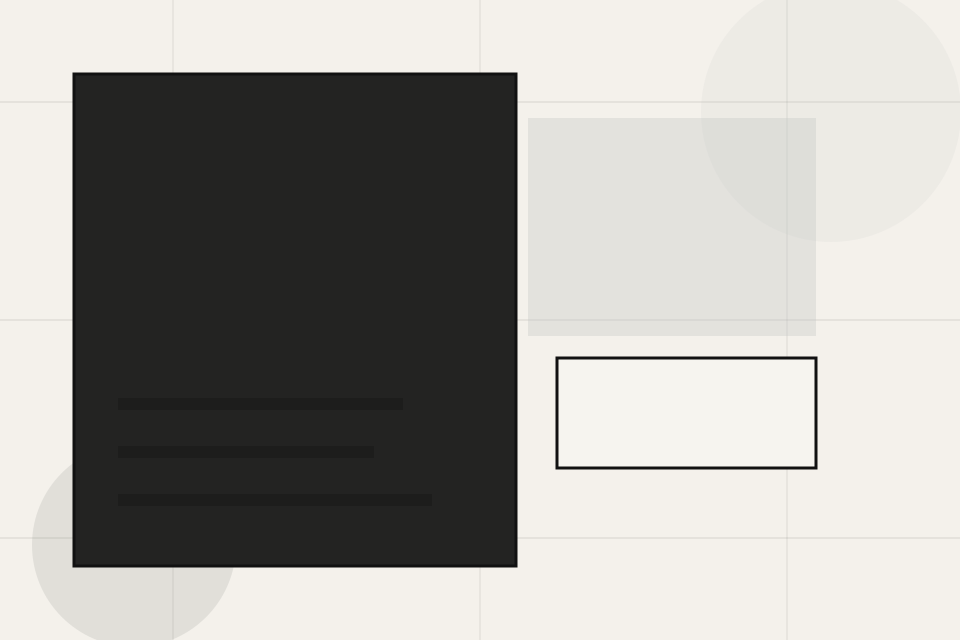
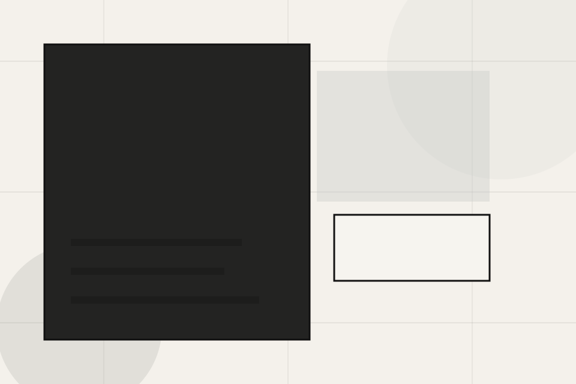
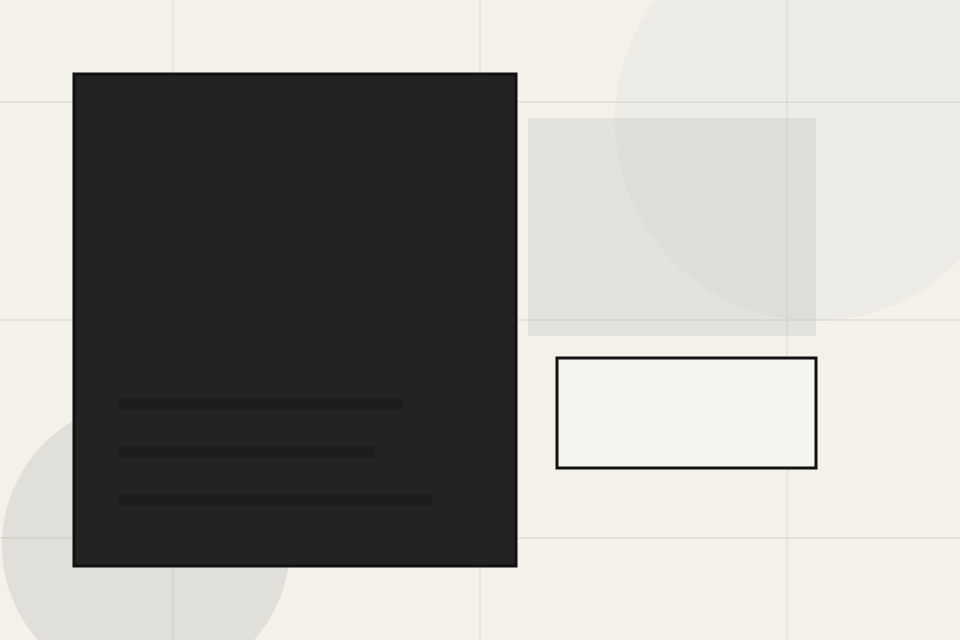
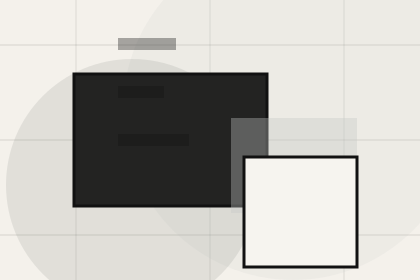
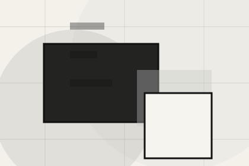
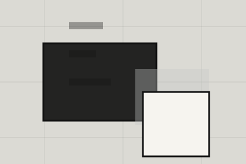

Context
Residential gives the page a specific angle instead of repeating the navigation label.
Projects / 01
Projects opens as a clear architecture decision hub: what Craft offers, who it helps, why it matters, and which route to take first.
The first screen combines positioning, proof, primary action, and fast internal navigation, so people can act immediately or compare the rest of the projects route with context.
Minimal full-bleed project hero
Select the closest route and Craft keeps the next step, proof, and follow-up expectation aligned with taste and design authority.

Projects / 02
Portfolio adds editorial context to the projects route, using the spatial project index structure to support taste and design authority before visitors choose a next step.
Craft uses architectural index cards and focused copy to make the decision easier to scan, aligning the section with taste and design authority rather than filling space.
Explore ProjectsPortfolio gives the page a specific angle instead of repeating the navigation label.
The architectural index cards show what to compare, what to avoid, and what matters most for architecture, planning & built environment visitors.
The final cue points to a useful internal route so the section keeps the journey moving.


Projects / 03
Residential adds editorial context to the projects route, using the spatial project index structure to support taste and design authority before visitors choose a next step.
Craft uses architectural index cards and focused copy to make the decision easier to scan, aligning the section with taste and design authority rather than filling space.
Explore ProjectsResidential gives the page a specific angle instead of repeating the navigation label.
Projects / 04
Commercial adds editorial context to the projects route, using the spatial project index structure to support taste and design authority before visitors choose a next step.
Craft uses architectural index cards and focused copy to make the decision easier to scan, aligning the section with taste and design authority rather than filling space.
Explore ProjectsCommercial gives the page a specific angle instead of repeating the navigation label.
The architectural index cards show what to compare, what to avoid, and what matters most for architecture, planning & built environment visitors.
The final cue points to a useful internal route so the section keeps the journey moving.
Projects / 05
Urban adds editorial context to the projects route, using the spatial project index structure to support taste and design authority before visitors choose a next step.
Craft uses architectural index cards and focused copy to make the decision easier to scan, aligning the section with taste and design authority rather than filling space.
Explore ProjectsUrban gives the page a specific angle instead of repeating the navigation label.
The architectural index cards show what to compare, what to avoid, and what matters most for architecture, planning & built environment visitors.

The final cue points to a useful internal route so the section keeps the journey moving.
Projects / 06
Context adds editorial context to the projects route, using the spatial project index structure to support taste and design authority before visitors choose a next step.
Craft uses architectural index cards and focused copy to make the decision easier to scan, aligning the section with taste and design authority rather than filling space.
Explore ProjectsContext gives the page a specific angle instead of repeating the navigation label.
The architectural index cards show what to compare, what to avoid, and what matters most for architecture, planning & built environment visitors.
The final cue points to a useful internal route so the section keeps the journey moving.
Projects / 07
Response adds editorial context to the projects route, using the spatial project index structure to support taste and design authority before visitors choose a next step.
Craft uses architectural index cards and focused copy to make the decision easier to scan, aligning the section with taste and design authority rather than filling space.
Explore ProjectsResponse gives the page a specific angle instead of repeating the navigation label.
The architectural index cards show what to compare, what to avoid, and what matters most for architecture, planning & built environment visitors.
The final cue points to a useful internal route so the section keeps the journey moving.
Projects / 08
Details adds editorial context to the projects route, using the spatial project index structure to support taste and design authority before visitors choose a next step.
Craft uses architectural index cards and focused copy to make the decision easier to scan, aligning the section with taste and design authority rather than filling space.
Explore ProjectsDetails gives the page a specific angle instead of repeating the navigation label.
The architectural index cards show what to compare, what to avoid, and what matters most for architecture, planning & built environment visitors.

The final cue points to a useful internal route so the section keeps the journey moving.
Projects / 09
Outcomes shows what changes after the work: clearer decisions, visible progress, and proof points that connect the offer to real outcomes.
The layout connects before-and-after thinking with measured outcomes, making the result easy to scan without promising what the business cannot guarantee.
Explore ProjectsThe uncertainty, delay, or missed opportunity visitors bring into outcomes.
The clearer, safer, or more valuable state Craft is designed to support.
The visible cue that connects outcomes to a believable decision, not a loose claim.
Projects / 10
Craft closes the projects route with a clear action, a quick reminder of the value, and a low-friction way to discuss the project.
Visitors who are ready can use the primary action. Visitors who are still comparing can scan the section links, proof, and support routes before they discuss the project.
Discuss ProjectThe final block keeps the choice simple: act now, compare one more proof route, or send enough detail for a focused response.
Discuss Projecttaste and design authority
A spatial portfolio site with minimal chrome, full-bleed project moments, thin metadata, and studio enquiry. Projects ends with a direct path to discuss the project, plus enough context for visitors who still need to compare.

Discuss ProjectInformation is provided for planning and should be reviewed for the final client, location, and operating rules.